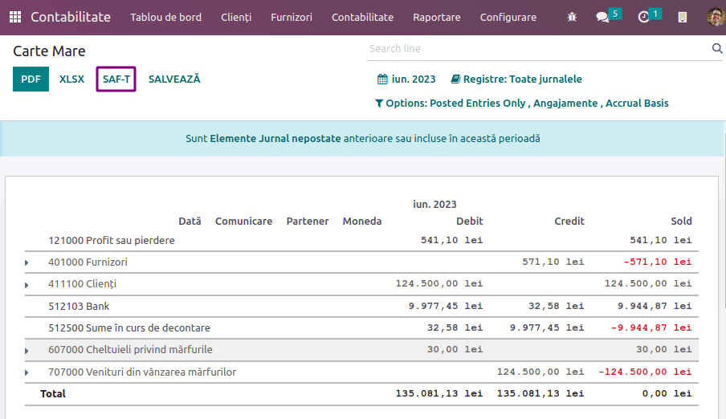

Romania¶
Configuration¶
Install the following modules to get all the features of the Romanian localization.
Name |
Technical name |
Description |
|---|---|---|
Romania - Accounting |
|
Default fiscal localization package. |
Romanian SAF-T Export |
|
Module to generate the D.406 declaration in the SAF-T format. |

D.406 declaration¶
Starting January 1, 2023, companies registered for tax purposes in Romania must report their accounting data to the Romanian Tax Agency monthly or quarterly in the D.406 declaration.
Odoo provides all you need to export the data of this declaration in the SAF-T XML format, which you can validate and sign using the software provided by the Romanian Tax Agency.
Note
Currently, Odoo only supports the generation of the monthly/quarterly D.406 declaration (containing journal entries, invoices, vendor bills, and payments). The yearly declaration (including assets) and the on-demand declaration (including inventory) are not yet supported.
Configuration¶
Company¶
Under Settings –> General Settings, in the Companies section, click Update Info and fill in the company’s Country, City, and Telephone Number.
Provide your company’s CUI number or CIF number (for foreign companies) in the Company ID field, without the
ROprefix (e.g.,18547290).If your company is registered for VAT in Romania, fill in the Tax ID field number, including the
ROprefix (e.g.,RO18547290). If the company is not registered for VAT in Romania, you must not fill in the Tax ID field.Open the Contacts app and search for your company. Open your company’s profile, and in the Accounting tab, click Add a line and add your bank account number if not informed already. Make sure the profile is set as Company above the name.
You must have at least one contact person linked to your company in the Contacts app. If no contact person is linked, create a new one by clicking New, set it as Individual, and select your company in the Company name field.
Chart of accounts¶
To generate a file receivable by the Romanian Tax Agency, the chart of accounts must not deviate from an official chart of accounts, such as:
the chart of accounts for commercial companies (PlanConturiBalSocCom), which is installed by default when creating a company with the Romanian localization or;
the chart of accounts for companies following IFRS (PlanConturiIFRS).
Under Settings –> Accounting, in the Romanian localization section, set the Tax Accounting Basis to reflect the accounting regulations and Chart of Accounts used by the company.
See also
Customer and supplier¶
Fill in the Country, City, and Zip Code of each partner that appears in your invoices, vendor bills, or payments through the Contacts app.
For partners that are companies, you must fill in the VAT number (including the country prefix) in the Tax ID field. If the partner is a company based in Romania, you may instead fill in the CUI number (without the ‘RO’ prefix) in the Company ID field.
Tax¶
You must indicate the Romanian SAF-T Tax Type (3-digit number) and Romanian SAF-T Tax Code (6-digit number) on each of the taxes you use. This is already done for the taxes that exist by default in Odoo. To do so, go to , select the tax you wish to modify, click the Advanced Options tab, and fill in the tax type and tax code fields.
Note
The tax type and tax code are codes defined by the Romanian Tax Agency for the D.406 declaration. These can be found in the Excel spreadsheet published as guidance for completing the declaration, which you can find on the website of the Romanian Tax Agency.
See also
Product¶
For some types of goods transactions, the Intrastat Code (Cod NC) must be configured on the product, as it is required by Romanian law:
import / export transactions;
acquisitions / supplies of food products subjected to reduced VAT rate;
intra-community movements subjected to intrastat reporting;
acquisitions / supplies subjected to local reversed VAT charge (depending on Cod NC); and
transactions with excisable products for which excise duties are determined based on the Cod NC.
If the Intrastat Code is not specified on a non-service product, the default code ‘0’ will be used.
To configure the Intrastat Codes, go to , select a product, and in the Accounting tab, set a Commodity Code.
See also
Vendor bill¶
You must check the Is self-invoice (RO)? checkbox in the Other Info tab for any vendor bill that is a self-invoice (i.e. a vendor bill that you issued yourself in the absence of an invoice document received from a supplier).
Generating the declaration¶
Exporting your data¶
To export the XML for the D.406 declaration, go to and click on SAF-T.
You can then validate and sign the XML file using the Romanian Tax Agency’s validation software, DUKIntegrator.
Signing the report¶
Download and install the DUKIntegrator validation software found on the website of the Romanian Tax Agency.
Once you have generated the XML, open ‘DUKIntegrator’ and select the file you have just generated.
Click on Validare + creare PDF to create an unsigned PDF containing your report, or Validare + creare PDF semnat to create a signed PDF containing your report.

If the DUKIntegrator validator detects errors or inconsistencies in your data, it generates a file that explains the errors. In this case, you need to correct those inconsistencies in your data before you can submit the report to the Romanian Tax Agency.